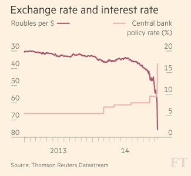
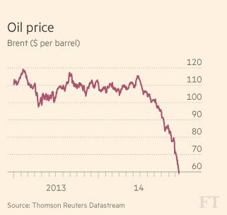
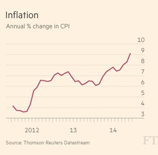
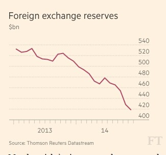
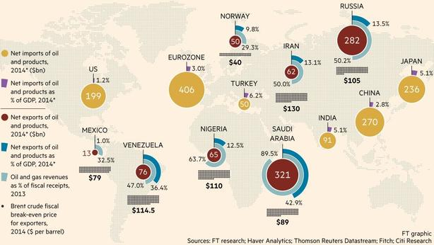
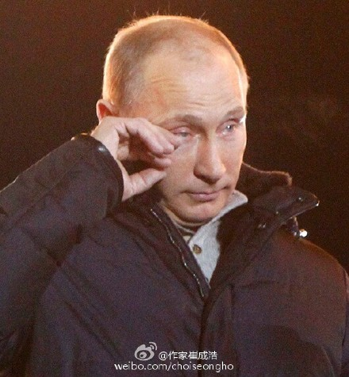
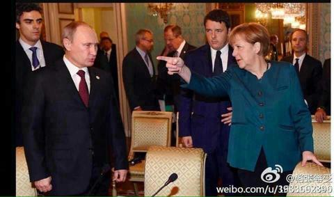

俄罗斯卢布在本周一（12月15日）大跌10%后，昨日再度崩溃。美元兑卢布，盘中最高升至80.10，卢布跌幅高达19%。俄罗斯股指RTS指数大跌19%，创1995年以来最大跌幅。（咱们A股12月9日大跌5.5%，跟人家19%的跌幅相比，只能算“小儿科”）
今天发一篇转载，让大伙儿了解此事以及近半年来的油价暴跌。
卢布“雪崩” 你需要知道的一切！ @ 华尔街见闻
（编程随想注：此文的信息量很大，每个小标题的链接，又分别指向另一篇专题报道）
图解俄罗斯“黑色星期二” @ 金融时报/FT
 （上图中，浅粉线为俄罗斯利率，深红线为卢布汇率）
 全球油价基准——布伦特(Brent)原油价格周二跌破每桶60美元，降至5年半低位，是6个月前每桶115美元的近一半。
 俄罗斯通胀率11月触及9.1%。但随着卢布大幅贬值提升进口价格，经济学家担心，物价涨幅可能会在2015年初升至两位数。

 今年初时该国外汇储备为4990亿美元，到11月底时降至4190亿美元，现在更跌至4000亿美元左右
油价跌卢布贬俄罗斯经济雪上加霜 @ 法广/RFI
卢布继续贬值，引发市场恐慌 @ 纽约时报
卢布暴跌你所不知道的原因——俄央行印钱救国企 @ 华尔街见闻
俄政府前经济顾问：俄罗斯正迈向灾难 @ 新浪财经
俄罗斯下一个严峻考验——须避免银行挤兑 @ 新浪财经
外媒：普京领导下的俄经济体系正面临崩溃 @ 凤凰财经
CNN：俄罗斯宣布卢布报价超64.45成交的全部作废 @ 凤凰财经
俄银行高管：加息至17%“是银行系统的末日” @ 腾讯财经
全球原油价格究竟缘何下跌？ @ 华尔街日报
油价暴跌让中国喜忧参半 @ 金融时报/FT
全球供应过剩推动油价大跌 @ 华尔街日报
全球油价跌不休 利好美国 利空俄罗斯 @ 华尔街见闻
读报：卢布暴跌 普京政权会否崩溃？ @ 华尔街日报
卢布暴跌考验普京政府 @ 华尔街日报
经济衰退也不能动摇普京的统治 @ 纽约时报
卢布崩盘 普京怎么办？ @ 华尔街见闻
中俄关系——亦敌亦友？ @ 金融时报/FT
卢布崩盘——中国或因货币互换协议变送钱机器 @ 新浪财经
中国拯救了俄罗斯摇摇欲坠的原油产业 @ 华尔街见闻
彦纬：20年俄罗斯对中国使了哪些坏？
叶檀：
让我们见证卢布崩盘的时刻。截止北京时间晚8点半，卢布继隔夜暴跌15%后，再度下挫17.8%。俄罗斯股指RTS指数大跌19%。
鸡肉男怎么办？无法挽回卢布颓势，只有耍赖不承认境内市场限额汇率交易，控制外汇市场，甚至不许提现，回到管制时代。
与新兴国家以货易货，国内自杀式加息，控制通胀与资金外流。
※范强※法特姗瑟希蒲※：
国际石油价格下跌对谁有利，对谁不利？《金融时报》的这张图勾画出其利害关系。最不利的当然是石油输出国家，俄罗斯、委内瑞拉、尼日利亚、伊朗；其次是沙特。挪威、墨西哥也受到一些负面冲击。最有利的是：美国、日本、印度；欧盟、中国、土耳其小利。

LifeTime：
有人把卢布崩塌与油价下跌简单相关非常幼稚。对石油产业依赖度更高、全球最大产油国沙特货币里亚尔为何没有这种窘态？
俄罗斯卢布的崩塌最根本原因还在在于普京的冒险政治给俄罗斯市场带来恐惧，从而导致资本外撤造成的。
这种外撤的主流并不是外国投资，而是俄罗斯本国的资本。
关健斌：
跌跌不休何时了，家底剩多少。央行昨夜又放风，故国不堪回首风雪中。
雄心霸气应犹在，只是时代改。问君还能挺多久？来日方长慢慢瞅。
卢布遭遇＂黑色星期二＂后，美方宣布，奥巴马本周底前签署新的制裁俄罗斯法案。这是要死磕的节奏吗？
预测一下：俄央行肯定有人下课，政府估计有人负责，普京明天还有年度大型记者会，且看且分析。
大老貓：
【快讯】美元对俄罗斯卢布突破70！这是要崩盘的节奏？
卢布都贬值成那样了，普京怎么还不去剖腹自杀向俄国人民谢罪呢。#卢布
Jian Alan Huang：
卢布一年来贬值50%，俄罗斯社会财富直接拦腰砍掉一半，普京倾家荡产换了个克里米亚回来，也是够拼的。
Jian Alan Huang：
估计连美国也没想到，冷战过去快30年了，俄罗斯不但军事上不可同日而语，就连经济也还是如此不堪一击。仅仅靠联合阿拉伯国家打压一下油价就能涮俄罗斯一把。
印象里板砖四国不是成立过一个储备银行嘛，怎么什么动静都没有？再不出手恐怕只能收尸了。
雷不疯：
美元一骑绝尘的涨势已经有所收敛，原油开始止跌有点盘整的意思，卢布的跌幅真是心惊胆魄，叮外盘外汇的应该看得很清楚，一国主权货币的一日跌幅超过10%，这是什么概念？人民币兑卢布1：10马上就可以看到！
普特勒会不会来点幺蛾子信息？ 呵呵，明年开春想去俄罗斯旅游的可以先计划计划了！！！
※范强※法特姗瑟希蒲※：
俄罗斯与西方交恶，加上石油价格直线下跌，俄罗斯卢布迅速贬值，与美元和欧元的交易价惨不忍睹。
今年1月份，用32卢布可以换取1美元，到12月时需要用51卢布换取1美元。
俄罗斯人生活品质很明显下降，但照样拥护普京。由此可见，人类的愚蠢并非由于智商不佳，而是自我信念所致。
※范强※法特姗瑟希蒲※：
据国际文传通讯社报道，俄罗斯石油公司Gazprom将裁减 15%-25% 的雇员，目前它的雇员人数为46万。
泰守轩yamamura：
刚刚和在莫斯科的朋友通了个电话，老莫以前在国企做，现在自己做。刚刚消息是莫斯科居民都在囤积美元和欧元，甚至还有人民币的。
他们主要害怕卢布重新发行，如果一旦这样，他们的卢布资产会拼命缩水。
这是俄罗斯政府曾经用过的手法。
作家崔成浩：
普京哭了！俄罗斯卢布对美元呈瀑布式下跌，面临崩溃。
俄罗斯不哭，俄罗斯挺住！今天我们都是俄罗斯人。

夜郎国尚书：
其实老毛子已经悄悄妥协，昨日拉夫罗夫称，俄罗斯正在寻求把顿巴斯留在乌克兰的和平解决方案。
无奈资本市场已经不再相信普京集团，莫斯科不相信眼泪，而世界不相信普京。
hrbdy5588：
普京统治下的俄罗斯今天的状况80%是政治原因，20%是经济原因；
占80%政治原因的核心是独裁者普京。
hrbdy5588：
普京俄罗斯市场已经陷入混乱，那些没有及早兑换美元的俄罗斯人面临相当的困境。
所以，未雨绸缪，那些面临大崩溃的地方的善良民众兑换些美元放在身边吧。
【官方喉舌《环球时报》的社评】
3月3日：美欧的口炮难敌俄罗斯真坦克。
3月5日：中国舆论应多挺俄罗斯和普京。
3月13日：俄罗斯这次真让西方成了纸老虎。
3月19日：普京镇住西方，难在长期主动。
12月17日：中国不希望俄罗斯倒下，这谁都知道。
12月18日：中国不能趁火打劫 勿以为俄遇困难就能夺回领土。
Hanson Tang：
这一轮油价持续下跌明眼人一看就知道是人为因素造成。其结果就是油价下跌中国一点便宜没占还要倒贴俄罗斯溢价款，这不是送钱机器还能是什么？
看看国内油价两次增加消费税就明白那里出问题了。
全中国人民在为习胖愚蠢的决定买单！
敏奇微博：
权贵们表面上与俄罗斯打得火热，但他们的赃款却从来不存放在俄国，也不在俄购房置业，子女们更不加入俄籍。
尽管告诉我们说我们要比美国好5倍，但不管外逃还是选择后路，却都不会考虑俄国而选择美国等西方国家，说明它们知道什么国家是好的。
Wendy：
制裁使卢布贬值已不可阻挡，中国却用1500亿元人民币换8150亿卢布，给俄雪中送炭！
按现在的汇率能换1万亿卢布，那300亿人民血汗就被送礼了？
国际油价跌不到90美元，你用135美元一桶买了俄国今后10年的原油！
能为数亿贫困百姓，上百万失学儿童及百万多老弱妇孺病残乞丐雪中送炭吗？
大老严：
与俄罗斯签订5000亿人民币对卢布互换协议，一周后卢布大跌，中国损失1000多亿人民币！
与俄签订购买2700亿美元石油、每桶高达135美元的协议，而现在每桶60美元，且还在下跌！又损失1000亿美元！
仅此每个俄人就能收到友好的中国人民赠送的5000元人民币大礼包！他们住房、看病、
大老严：
2013年3月，俄石油公司总裁伊戈尔•谢钦与中国石油天然气集团董事长周吉平签署了对华长期供应原油协议：
“俄罗斯石油公司计划在25年内对华供应约3.65亿吨原油，总金额约达2700亿美元。”
当时原油约100美元/桶，今天57.5美元/桶，黄俄一直为普金洗地，可洗的是中国人的血汗钱。
贝格海德：
给圈外人科普一下货币互换
某天中国与俄罗斯达成1500亿人民币／8150亿卢布货币互换交易，中国把1500亿人民币交给俄罗斯，俄罗斯把8150亿卢布交给中国。
在约定期限到期时，哪怕卢布变成废纸，俄罗斯也要把1500亿人民币还给中国，中国把8150亿卢布还给俄罗斯。
今天下午三点：
问题在于俄罗斯拿着1500亿人民币不可能吊事不干，而中国拿着8150亿日渐缩水的卢布能干吊事？
幺姨：
从我所读到的的新闻报道来讲，@贝格海德 解释的货币互换是胡说八道！
中郭跟非西方工业国的贸易为了方便贸易，重要的减少使用硬通货（西方主要工业国的货币，特别指美元和欧元）产生的汇兑损失和麻烦，而由政府主导按协议时的购买力预付贸易货币！
《互换货币的协议》根本没有在所谓的啊“到期”一说，所谓的到期也只是在一方用完了另一方的货币后，再新一轮的进行货币互换！
这其中根本没有还回原货币的要求或条款！
为了给正腐犯傻辩护，贝格海德 这厮 胡诌了不存在的说法！
Lily-Kuang：
货币互换不是你说的这么轻松，简单。简单的就像过家家，拌尿尿泥。货币互换是架构在经济，政治的一系列基础之上的金融行为。俄罗斯有遭遇经济制裁，卢布下行的风险。你就敢冒然和卢布互换？这是多蠢的机构才能干出的事？
拈花时评-lianhuaxiaofo：
俄罗斯卢布已经崩盘，经济近乎崩溃，本人为普京大帝支一招，准能起死回生：
把原来侵略中国的库页岛等150多万平方公里的土地卖给中国，因为本是中国领土，所以可以打个折----8万亿美金，也可分期付款。
中国买来后再高价卖给地产商，然后再把房子高价卖给国内的傻B们，绝对远超8万亿。
Malloy Zhang：
“乖儿子，石油价格不行了，怎么办？”
“爹。儿子这就给你汇款去，就算110美金每桶吧，2700亿美金已汇，请查收。谢谢爹”
“儿啊，最近卢布也撑不住了。”
“爹，这是1500亿美金，爹拿去。汇率你说吧。”
我是谁865：
不是送钱，是当年列宁投资30万美元的收益。
与列宁投资中国30万美元所得的收益比，巴菲特和索罗斯简直弱爆了。
贾榀：
默克尔：你们占了中国几百万平方公里土地，现在还要骗人家钱，太无耻了。
普京：那是他们傻逼，关你屁事？
 （编程随想注：关于俄罗斯强占天朝的领土，可以参见《谁是最可恨的人？——写给仇日愤青们》）
老杨：
黄俄大合唱之保卫黄俄 RT @wisicn
风在吼 马在叫。普京在咆哮 普京在咆哮。
西方制裁步步升高，国际油价不断下掉。
华夏大地，普京粉丝真不少；快来出手，兑换卢布逞英豪。抛出了欧元美金，换上那俄国钞票。
保卫苏联 保卫俄国 保卫普京 保卫我五毛！
laoyang945：
环球时报员工本月工资应该扣一半拿去支援俄罗斯，别就嘴上说说。
huasi49：
想当年，萨达姆统帅百万雄狮，都是两伊战争锻炼出来的精兵强将，几百架米格29战机，几千辆t72坦克，势如破竹的占领了石油大国科威特，国内一片欢呼，美欧惊恐万状，萨达姆威望世界第一。
看今年，普京大帝率百万红军，挥舞可毁灭地球五次的热核武器，几千架最先进苏35飞机，几千辆t100辆坦克，一举拿下克里米亚，国内一片欢呼，社会主义阵营一致拥护，彼得大帝斯大林统帅重现了。
（编程随想注：以下这篇是经典高级黑）
孙立平：
中国一出现通货膨胀，就把问题追到猪肉身上，说猪肉价格涨到了历史最高水平。
废话！现什么不到历史最高水平了？为什么一说物价上涨就追到猪肉？不追到汽油上？
你说猪肉影响大还是汽油影响大？当然汽油影响大。
追到猪肉，因为猪肉背后那些人好欺负，而汽油背后的人不仅不好欺负，它还要反过来欺负你。
平民邓磊：
大家请看无知无耻的毛左残渣余孽推崇维护的垄断国企的丰功伟绩！
从2005年度到2008年度，中国石油、中国石化、中国移动、中国联通四大公司海外分红总额超过了1000亿美元，约合人民币7000亿元；
而中国A股的全部上市公司，在18年里给全体股民的分红总额，才2000亿元人民币。
2007年全国的社会保障支出也就275亿人民币，仅相当于上述四家公司一年海外分红的六分之一。
而四大公司的盈利完全是来自对国内消费者的掠夺——石油资源涨价、手机双向收费等高额收费。
boy1573：
全球油价大幅度下跌，中共当局却再次提高成品油消费税，目的很明确，阻止国内油价下跌。
这件事彻底证实了之前中共从俄罗斯购买高价石油的传闻。
国外损失国内补，不敢跟俄罗斯毁约，就只能拿国内人民开刀，这样的流氓政权不倒台真是天理不容！
taojizhi：
目前二次逆天加石油的消费税，说的是为了以税收做为价格杠杆来迫使减少消耗，节能环保。又说我们的税以及成品油价还没有周边国家高。
这个呢，打劫是真的，环保是扯淡。
价格和税不高的说法也不成立，因为周边是有国家油比咱们贵，但是人家高速不收费，都从油价里收过了。
真正的目的：一是打劫，二是价格不能降。价格降了怕出现输入性紧缩，在宏观经济上紧缩比通胀还难以应付。于是降息，降准，加税一轮一轮的上。
拈花时评-lianhuaxiaofo：
有人说，燃油税即使提高，也比欧洲一些国家低。这些所谓的专家真可谓无知。
欧洲的99%高速路之所以不收费，就是因为收了燃油税。高速公路的收费体现在燃油税里。
没有任何一个国家，一方面，征收昂贵的高速费，同时，还征税超过高昂的燃油税的。
如果二者相加，中国又一个全球第一。
新宇翔：
发个数据说说油价：（以下数据网上都能查到）
2006年3月23日 国际油价收盘价63.7美元 美元人民币汇率约为8
2006年3月26日 国内油价4.65元/升
2014年12月15日 国际油价约58.62美元（还未收盘） 美元人民币汇率为6.19
2014年12月15日 国内油价6.6元/升
一万匹草泥马从眼前跑过
太子：
这个二逼国度看见国际油价降，不好意思涨钱了，结果把燃油消费税提高了，真是天朝。
都说国民党税多土匪多，我看土匪就是土匪。
法界行走：
中国人民喜迎燃油税半个月内两次大幅度上涨！
今天发一篇转载，让大伙儿了解此事以及近半年来的油价暴跌。
★媒体报道——关于“卢布崩溃”
卢布“雪崩” 你需要知道的一切！ @ 华尔街见闻
（编程随想注：此文的信息量很大，每个小标题的链接，又分别指向另一篇专题报道）
图解俄罗斯“黑色星期二” @ 金融时报/FT
油价跌卢布贬俄罗斯经济雪上加霜 @ 法广/RFI
俄罗斯宏观经济顾问中心经济学家维弗的看法是，卢布完全失去了控制。完全是自由落体的速度。
......
其实，俄罗斯卢布狂跌的大背景是国际性的。俄罗斯因乌克兰危机而遭西方制裁后经济实力被削弱，加之油价一路下跌，致使卢布与欧元相比从年初以来狂跌42%，与美元相比狂跌了49%，卢布狂跌，导致物价猛涨，根据俄罗斯央行的估计，一年之内通货膨胀率应达到11.5%。
俄罗斯央行几乎天天都会干预，还把指导利率提高到10.5%，比年初几乎高出双倍，以预防对俄罗斯经济造成更大损害的风险性投机。问题是俄罗斯经济已经处于衰退的边缘，利率已经非常昂贵。不过，周二凌晨传出的消息说，俄罗斯央行大刀阔斧一下子把指导利率从10.5%提升到17%。
......
现在围绕普京总统的压力在加大。星期四，普京将举行年度大型新闻发布会。一个很悖论的现实是：一方面，从俄罗斯吞并克里米亚以来，普京的民意支持率打破了纪录；另一方面，俄罗斯民众对自身生活水平的提高也越来越感到悲观。
卢布继续贬值，引发市场恐慌 @ 纽约时报
俄罗斯石油公司上周五发行了6250亿卢布的新债券，按当时的汇率约合109亿美元。买家的身份没有公开披露，但分析人士表示，大型国有银行购买了这些债券。
当这些银行把债券存入央行以换取贷款时，俄罗斯石油公司将得到融资，实际上相当于从央行拿到了卢布。
政府为俄罗斯石油公司安排的解决方案的披露，在周一震撼了市场，显然是因为它与一个所谓赤字货币化的做法类似，也就是用印钞票来填补政府预算缺口。
......
周一货币大跌的原因“众所周知”，鲍里斯·Y·涅姆佐夫(Boris Y. Nemtsov)在其Facebook页面上写道。他曾任俄罗斯副总理，现在属于政治反对派。
“央行启动印钞机，来帮助谢钦-普京的商业，给了俄罗斯石油公司6250亿新印出来的卢布。新票子马上出现在货币市场，导致汇率崩溃。”
卢布暴跌你所不知道的原因——俄央行印钱救国企 @ 华尔街见闻
彭博专栏作家Leonid Bershidsky、《福布斯》俄文版的首位出版人近日撰文指出，央行与Rosneft的交易或造成了卢布的大跌：
俄罗斯国有最大石油公司——Rosneft上周通过发行债券融资6250亿卢布（约合108亿美元），这部分债券收益率比同期限的俄罗斯国债还要低。
央行迅速将这部分债券纳入自己的可抵押品名单，这样其他银行便可使用这部分债券来作为抵押向央行换取流动性。虽然不知道哪些银行购买了这些债券，但是可以推测有如下的事情可能发生：
首先购买了Rosneft债券的银行们（可能是大型国有银行），可以将债券抵押给央行，然后借入外汇并将这部分钱通过货币互换合约提供给Rosneft。该公司实际上相当于从央行拿到了卢布，并且央行的外汇储备也被迫减少了一部分。
Rosneft可以将这部分卢布投资于生产，当然也可能用这部分卢布购买美元，用来偿还之前的债务，正是后者这样的操作导致卢布严重下跌。
纽约时报直接将这一行为比作印钞，该报报道称，本周一卢布遭抛售的原因之一是市场担心央行实际上在靠发行新卢布来支撑国有石油公司Rosneft。
俄政府前经济顾问：俄罗斯正迈向灾难 @ 新浪财经
如今的俄罗斯，现金为王。西方的制裁让俄罗斯所有的国际融资“突然停止”，甚至连中国国有银行都忌惮美国而不敢为俄罗斯提供融资。
在外界看来，俄罗斯的外汇储备似乎非常充足。截至11月28日，俄罗斯的官方外汇储备高达4205亿美元。但值得指出的是，这些储备中一半以上流动性并不好。正如我此前提到，这其中有450亿美元是黄金储备，还有1720亿美元属于两只主权财富基金，而这两只基金由财政部管理。这些资产要么流动性不足，要么不属于央行控制。
事实上，俄罗斯有效的外汇储备只有2030亿美元，考虑到俄罗斯经济部预计2014年将有1250亿美元资本净流出，外汇储备将更加雪上加霜。
明年的资本外流可能会更加严重。国有企业已经无法获得任何融资，但必须偿还到期债务。私人公司不仅必须偿还到期债务，而且很愿意提前还债，因为卢布预计将进一步贬值。
俄罗斯的富人们也都希望在政治、经济形势恶化之前能够将资产撤离。随着资本外流的加剧，资本管制势在必行，而这一预期又将进一步加快资本外流。
俄罗斯下一个严峻考验——须避免银行挤兑 @ 新浪财经
到目前为止，恐慌还基本局限在金融市场。但如果居民开始到银行去提取现金，恐慌情绪将会迅速蔓延。
在Mitov看来，银行挤兑是迟早的事。他指出：“有报道称，现在无论在莫斯科还是圣彼得堡，都已经换不到硬通货。”
虽然俄罗斯央行账面上有超过4000亿美元的外汇储备，但实际可用的金额或许不到一半。Mitov认为俄罗斯进行外汇干预、捍卫卢布的能力或只能维持半年。
另外，比起俄罗斯的外汇储备，俄罗斯企业所欠的外债规模要大得多。Mitov表示：“明年俄罗斯将会出现大规模企业债违约潮。”其中风险最大的是电信和零售行业的公司。这些公司大部分营收都是本币。
外媒：普京领导下的俄经济体系正面临崩溃 @ 凤凰财经
虽然，普京在乌克兰危机上的政策获得国内普遍认可，但目前的货币危机正在侵蚀其领导权威，位于莫斯科的分析师表示。
自1999年叶利钦卸任后，普京担任俄国总统以来，普京一直以改善俄罗斯经济困局著称，但目前油价下跌，西方国家对其制裁俨然给普京带来执政以来最大挑战。
昨日，俄央行上调利率17%，幅度为16年以来最大，但依然未能阻止卢布继续下跌。卢布兑美元汇率从1:34降至1:70，而与此同时，油价下跌近五成，至60美元每桶一下。
卢布下跌与随之而来的经济下滑都标志着，过去15年来依赖能源支撑的俄国经济体系正在崩塌，俄天然气公司高管表示。
调高利率将会使得家庭与企业贷款更艰难，也会使俄经济复苏变得更遥远，位于伦敦的经济学家Neil Shearing表示。
CNN：俄罗斯宣布卢布报价超64.45成交的全部作废 @ 凤凰财经
莫斯科外汇交易中心突然宣布当日美元兑卢布即期报价超过64.45的成交全部作废，理由是超过了交易所设定的风险管理控制线。
此举引发当地投资者大规模抗议，决定宣布后一小时，首都数千名投资者聚集并冲击交易所未果。
CNN连线的花旗分析师称，由于离岸市场仍在交易，俄交易所举动加大了国内投资者对价差损失和无法及时止损的恐惧。
俄罗斯卢布兑美元周一大跌约10%，创1998年来最大跌幅，俄罗斯资产全线下滑，使得俄罗斯央行的能力受到考验，并给总统普京带来重大挑战。
交易商称，卢布重挫迫使央行周一干预汇市。今年以来，卢布兑美元已下跌50%。美国威胁对俄罗斯实行新制裁、油价大跌以及对卢布贬值的单向押注，对卢布造成打压。
彭博日前发布文章称，俄罗斯将不可避免地重演1998年的货币贬值和债务违约。
俄银行高管：加息至17%“是银行系统的末日” @ 腾讯财经
在这样的利率下，经济根本不可能正常运作，对（非金融非证券交易行业的）实体经济而言，这就是死亡。
......
Vedomosti的报道称，“银行间借款市场在周二死掉了，（这名银行家）补充说，早上的第一件事就是，每个人都关上了门——你现在不能给任何人钱。”他还说，“我们的（联邦贷款义务）投资组合在周二缩水了10%，这基本上抹消了我们一年以来的所有利润。”
★媒体报道——关于“全球油价下跌”
全球原油价格究竟缘何下跌？ @ 华尔街日报
近来全球原油价格从每桶100美元上方骤然跌至65美元以下，一些人将此形容为全球两大产油国——沙特和美国相互对抗所造成的结果。然而实际情况要更加复杂，这其中涉及到利比亚的叛军、印尼的出租车司机、美国德克萨斯州的石油工人乃至中东各国的石油部长。这既反映出了原油供应的大幅增加，也折射出原油需求的下滑。
而油价的大幅跌势可能不会很快结束。美银美林(Bank of America Merrill Lynch)称，美国油价在2015年可能会跌至每桶50美元。上周四，美国油价多年来首次收于60美元/桶下方。
油价暴跌让中国喜忧参半 @ 金融时报/FT
石化信息提供商隆众石化网(Oil Chem)石油分析师李彦表示：“油价暴跌让中国受益。它有助于中国降低进口成本，增加石油储备，从而提高能源安全性。”
然而，情况比这更为复杂，因为中国同时也是全球第四大石油生产国。
因此，中国和其他所有石油生产国一样容易受到油价下跌的影响。中国去年原油产量达到445万桶/日，仅次于沙特阿拉伯、俄罗斯和美国。中国的原油产量也超过了除沙特以外的其他所有欧佩克成员国。中国在过去十年的石油产量增长了近75万桶/日，但在同一时期，石油消费增长了370万桶/日。
全球供应过剩推动油价大跌 @ 华尔街日报
全球油价跌不休 利好美国 利空俄罗斯 @ 华尔街见闻
《华盛顿邮报》、《华尔街日报》等西方媒体报道，将这些油价下跌的因素归纳为以下三点：
1、在美国产量大增的推动下，全球产油量不断增长。
由于页岩开采技术革命提升了美国北达科他州和德克萨斯州的采掘能力，美国产油量已经增至每日850万桶，这是1986年以来最高水平。包括液化天然气在内，美国的产油量几乎持平沙特。
2、全球消费增长乏力。
3、石油输出国组织欧佩克（OPEC）内乱，加剧油价跌势。
★媒体报道——关于“俄罗斯政坛”
读报：卢布暴跌 普京政权会否崩溃？ @ 华尔街日报
美国《华盛顿邮报》12月16日的报道说，
外界一直认为普京政权的基础是他与俄罗斯民众间一项心照不宣的交易：普京保证俄罗斯获得经济繁荣和稳定，而俄罗斯人则对该国不存在真正反对党的局面持默认态度。而现在，普京这一方似乎开始失信了。
英国《卫报》12月16日的报道说，
尽管卢布汇率屡创新低，但俄罗斯人的情绪总体上依然平静，几乎看不到什么恐慌迹象。
英国《每日电讯报》12月16日的报道说，
随着卢布保卫战的失败，俄罗斯有可能遭遇前苏联式的突然崩溃。报道说，在俄罗斯央行通过大幅加息来遏止卢布崩盘的努力失败后，俄罗斯已经丧失了对其经济的控制，它有可能被迫采取前苏联式的外汇管制。报道援引俄罗斯央行副行长Sergei Shvetsov的话说，目前形势严峻，这种噩梦般状况即使在一年前也是不可想象的。
卢布暴跌考验普京政府 @ 华尔街日报
由于加息后信贷成本增高，物价上涨注定会伤害到消费者。据零售商协会(The Association of Retail Companies)的发言人称，该协会预计明年第一季度食品和饮料价格将上涨多达15%。
近期俄罗斯民众希望赶快花掉快速贬值的卢布，于是赶在物价预期上涨前购买电子产品和汽车。电子产品零售商M.video将目前大约三分之一的销售额归于此类购买。
俄罗斯副总理奥莉加·戈洛杰茨(Olga Golodets)警告称，物价上涨将导致贫困人口数量增加，政府很少这样坦承即将到来的经济阵痛。
经济衰退也不能动摇普京的统治 @ 纽约时报
长期以来，许多想看到普京政权走向终结的人一直认为——或者说是一直希望——俄罗斯经济的恶化将会使那些富有的上层阶级突然背弃这位总统。俄罗斯的新闻工作者、专家学者，以及普京的政治对手都在预测，西方的制裁及其激化的经济灾难将促使俄罗斯寡头发动一场政变。这种观点只存在一个漏洞：俄罗斯已经没有寡头了。
15年前的这个月，普京成了代总统，而当时的俄罗斯是一个寡头社会——确实是由一小群在之前十年中变得非常富有的寡头，帮助挑选出了当时默默无闻的普京，让他成为这个国家的掌舵人。但时间没过去几个月，普京就向寡头们提出了一个他们无法拒绝的选择：放弃所有的政治权力和部分财富，换取安全、保障和继续富裕，否则就会被剥夺一切的权力和资产。
他是动真格的。传媒大亨弗拉基米尔·古辛斯基(Vladimir Gusinsky)拒绝了这套新游戏规则，在2000年的夏天被迫流亡。超级寡头鲍里斯·别列佐夫斯基(Boris Berezovsky)几个月后步了他的后尘。俄罗斯首富米哈伊尔·霍多尔科夫斯基(Mikhail Khodorkovsky)拒绝了任何这样的交易，结果遭到监禁，公司也被夺走。摧毁俄罗斯寡头的过程就这样完成了。
霍多尔科夫斯基被捕后的这11年里，普京继续巩固权力，达到了政治学者凯伦·达维沙(Karen Dawisha)所称的“盗贼威权主义”的地步。其本质特征是无所不包的腐败，它让俄罗斯的上层富翁——全都是男人，全都有钱——形成了深层的相互依存关系。他们中很多人在此期间担任了公职，但总是离不开三个环环相扣的条件：他们必须花钱买官；他们可以利用公职来积累更多的财富；尽管如此，他们不能用它来行使或掌握政治权力。
卢布崩盘 普京怎么办？ @ 华尔街见闻
《财富》杂志网站高级编辑Geoffrey Smith认为，如果俄罗斯像当年那样爆发金融危机，遭殃的可不只是俄罗斯，不但俄罗斯政府的动向会更难以预测，国内通胀会升破10%、明年经济增长会下跌4.5%，卢布贬值缓和的机会渺茫，西方银行业也会受害。
......
Smith预计，俄罗斯不可能因此在乌克兰问题上做出任何让步。经济压力越大，俄罗斯政府就越有可能利用宣传工具，引导国民将经济形势恶化归罪于“邪恶的西方”，否认在西方国家看来属于侵略的合并克里米亚行为才是遭到经济制裁的元凶。
......
唯一能让普京解脱的就是国内发生政变，新的领导人顶替他的位子。俄罗斯历史上也有这个传统，不过大家回想下1991年和1993年前苏联解体期间的内乱，就会觉得，到那个地步俄罗斯会变得多糟糕。
这样看来，国际油价如果不能很快回涨，俄罗斯、乃至全球更可怕、更糟糕的形势还在后头。
★媒体报道——关于“中俄关系”
中俄关系——亦敌亦友？ @ 金融时报/FT
卢布崩盘——中国或因货币互换协议变送钱机器 @ 新浪财经
知名财经评论人叶檀表示，10月13日中国人民银行与俄罗斯联邦中央银行签署了规模为1500亿元人民币/8150亿卢布的双边本币互换协议，在卢布下行时，以固定汇率互换货币无异于直接送钱。中俄之间如果不以美元结算，最好的办法是建立自贸区，或者以货易货，中国需要能源原材料，俄罗斯需要工业产品、金融市场，双方可以互补。
（新浪财经注：按照当前汇率10.43计算，1500亿人民币约合15645亿卢布，反过来套算，根据货币互换得到的卢布现在价值约782亿人民币，资产减记718亿人民币。值得注意的是，目前这只是账面损失，并未实际发生。
本币互换是指以一定的汇率互换一定数量的双方的货币量，增加对方的外汇储备以应对不测之需，在特定情况下随时启动。通过本币互换可相互提供短期流动性支持，为本方商业银行在对方分支机构提供融资便利。）
中国拯救了俄罗斯摇摇欲坠的原油产业 @ 华尔街见闻
彦纬：20年俄罗斯对中国使了哪些坏？
俄罗斯不断掠夺在俄华人的血汗钱
2004年2月，俄罗斯内务部侦查委员会的10多名警察闯进莫斯科市区南部的大环公路旁的“艾米拉”大市场，突击检查华商的身份证件。两天后，在荷枪实弹的警察弹压下，大规模查抄使华商蒙受了上千万美元的经济损失。
2005年7月，俄大批警察前往莫斯科市中心“39仓库”查扣中国鞋。总货值近千万美元，其中多为温州鞋。后经过多方努力，次日俄方同意华商交付约12万美元“罚金”赎回此批货物。
2008年10月，俄对莫斯科的阿斯泰市场进行突击检查，查封了华商在仓库里的鞋、服装、袜子等日用品，货物价值大约21亿美元。
2009年6月，莫斯科东部行政区区长突然宣布：“由于违反卫生规定，莫斯科最大的市场被临时关闭”，这意味着价值近20亿美元的华商商品将被没收，成了莫斯科政府的战利品。
俄罗斯击沉中国货船毫无说法
一中国货船“新星”号在俄罗斯海参崴附近海域被俄海军击沉，船上10名中国船员中有3人获救，其余7人失踪。
......
中国的唯一反应是在事情发生后的2月24日，中国外交部发言人马朝旭在北京的例行新闻发布会上表示，中方对“新星”号货轮事件表示严重关切，对此事的处理高度重视，并期待俄方通报对此事的调查结果。事件后续发展不得而知，关于调查结果和赔偿事宜始终未见报道。
俄罗斯联手越南介入南海争端
2014年上半年在中国与越南在南中国海交恶之际，俄罗斯竟然公开力挺越南。
......
越南每年都从俄罗斯购买10多亿美元的军备，也因此跻身俄罗斯武器出口国的前列。俄罗斯向越南提供的武器装备都是比较先进的，性能甚至超过中国所购俄制武器，大多为进攻性的
俄罗斯在能源问题不断失信中国
两国之间谈了多年的中俄输油管道一事。谈也谈了，约也签了，但这个过程中俄罗斯却多次变卦不仅变卦，还把中国的死对头日本给拉进来与中国“鹬蚌相争”，大收渔翁之利。
★网友点评——关于“卢布暴跌”
叶檀：
让我们见证卢布崩盘的时刻。截止北京时间晚8点半，卢布继隔夜暴跌15%后，再度下挫17.8%。俄罗斯股指RTS指数大跌19%。
鸡肉男怎么办？无法挽回卢布颓势，只有耍赖不承认境内市场限额汇率交易，控制外汇市场，甚至不许提现，回到管制时代。
与新兴国家以货易货，国内自杀式加息，控制通胀与资金外流。
※范强※法特姗瑟希蒲※：
国际石油价格下跌对谁有利，对谁不利？《金融时报》的这张图勾画出其利害关系。最不利的当然是石油输出国家，俄罗斯、委内瑞拉、尼日利亚、伊朗；其次是沙特。挪威、墨西哥也受到一些负面冲击。最有利的是：美国、日本、印度；欧盟、中国、土耳其小利。
LifeTime：
有人把卢布崩塌与油价下跌简单相关非常幼稚。对石油产业依赖度更高、全球最大产油国沙特货币里亚尔为何没有这种窘态？
俄罗斯卢布的崩塌最根本原因还在在于普京的冒险政治给俄罗斯市场带来恐惧，从而导致资本外撤造成的。
这种外撤的主流并不是外国投资，而是俄罗斯本国的资本。
关健斌：
跌跌不休何时了，家底剩多少。央行昨夜又放风，故国不堪回首风雪中。
雄心霸气应犹在，只是时代改。问君还能挺多久？来日方长慢慢瞅。
卢布遭遇＂黑色星期二＂后，美方宣布，奥巴马本周底前签署新的制裁俄罗斯法案。这是要死磕的节奏吗？
预测一下：俄央行肯定有人下课，政府估计有人负责，普京明天还有年度大型记者会，且看且分析。
大老貓：
【快讯】美元对俄罗斯卢布突破70！这是要崩盘的节奏？
卢布都贬值成那样了，普京怎么还不去剖腹自杀向俄国人民谢罪呢。#卢布
Jian Alan Huang：
卢布一年来贬值50%，俄罗斯社会财富直接拦腰砍掉一半，普京倾家荡产换了个克里米亚回来，也是够拼的。
Jian Alan Huang：
估计连美国也没想到，冷战过去快30年了，俄罗斯不但军事上不可同日而语，就连经济也还是如此不堪一击。仅仅靠联合阿拉伯国家打压一下油价就能涮俄罗斯一把。
印象里板砖四国不是成立过一个储备银行嘛，怎么什么动静都没有？再不出手恐怕只能收尸了。
雷不疯：
美元一骑绝尘的涨势已经有所收敛，原油开始止跌有点盘整的意思，卢布的跌幅真是心惊胆魄，叮外盘外汇的应该看得很清楚，一国主权货币的一日跌幅超过10%，这是什么概念？人民币兑卢布1：10马上就可以看到！
普特勒会不会来点幺蛾子信息？ 呵呵，明年开春想去俄罗斯旅游的可以先计划计划了！！！
※范强※法特姗瑟希蒲※：
俄罗斯与西方交恶，加上石油价格直线下跌，俄罗斯卢布迅速贬值，与美元和欧元的交易价惨不忍睹。
今年1月份，用32卢布可以换取1美元，到12月时需要用51卢布换取1美元。
俄罗斯人生活品质很明显下降，但照样拥护普京。由此可见，人类的愚蠢并非由于智商不佳，而是自我信念所致。
※范强※法特姗瑟希蒲※：
据国际文传通讯社报道，俄罗斯石油公司Gazprom将裁减 15%-25% 的雇员，目前它的雇员人数为46万。
泰守轩yamamura：
刚刚和在莫斯科的朋友通了个电话，老莫以前在国企做，现在自己做。刚刚消息是莫斯科居民都在囤积美元和欧元，甚至还有人民币的。
他们主要害怕卢布重新发行，如果一旦这样，他们的卢布资产会拼命缩水。
这是俄罗斯政府曾经用过的手法。
作家崔成浩：
普京哭了！俄罗斯卢布对美元呈瀑布式下跌，面临崩溃。
俄罗斯不哭，俄罗斯挺住！今天我们都是俄罗斯人。
夜郎国尚书：
其实老毛子已经悄悄妥协，昨日拉夫罗夫称，俄罗斯正在寻求把顿巴斯留在乌克兰的和平解决方案。
无奈资本市场已经不再相信普京集团，莫斯科不相信眼泪，而世界不相信普京。
hrbdy5588：
普京统治下的俄罗斯今天的状况80%是政治原因，20%是经济原因；
占80%政治原因的核心是独裁者普京。
hrbdy5588：
普京俄罗斯市场已经陷入混乱，那些没有及早兑换美元的俄罗斯人面临相当的困境。
所以，未雨绸缪，那些面临大崩溃的地方的善良民众兑换些美元放在身边吧。
★网友点评——关于“天朝力挺俄罗斯”
【官方喉舌《环球时报》的社评】
3月3日：美欧的口炮难敌俄罗斯真坦克。
3月5日：中国舆论应多挺俄罗斯和普京。
3月13日：俄罗斯这次真让西方成了纸老虎。
3月19日：普京镇住西方，难在长期主动。
12月17日：中国不希望俄罗斯倒下，这谁都知道。
12月18日：中国不能趁火打劫 勿以为俄遇困难就能夺回领土。
Hanson Tang：
这一轮油价持续下跌明眼人一看就知道是人为因素造成。其结果就是油价下跌中国一点便宜没占还要倒贴俄罗斯溢价款，这不是送钱机器还能是什么？
看看国内油价两次增加消费税就明白那里出问题了。
全中国人民在为习胖愚蠢的决定买单！
敏奇微博：
权贵们表面上与俄罗斯打得火热，但他们的赃款却从来不存放在俄国，也不在俄购房置业，子女们更不加入俄籍。
尽管告诉我们说我们要比美国好5倍，但不管外逃还是选择后路，却都不会考虑俄国而选择美国等西方国家，说明它们知道什么国家是好的。
Wendy：
制裁使卢布贬值已不可阻挡，中国却用1500亿元人民币换8150亿卢布，给俄雪中送炭！
按现在的汇率能换1万亿卢布，那300亿人民血汗就被送礼了？
国际油价跌不到90美元，你用135美元一桶买了俄国今后10年的原油！
能为数亿贫困百姓，上百万失学儿童及百万多老弱妇孺病残乞丐雪中送炭吗？
大老严：
与俄罗斯签订5000亿人民币对卢布互换协议，一周后卢布大跌，中国损失1000多亿人民币！
与俄签订购买2700亿美元石油、每桶高达135美元的协议，而现在每桶60美元，且还在下跌！又损失1000亿美元！
仅此每个俄人就能收到友好的中国人民赠送的5000元人民币大礼包！他们住房、看病、
大老严：
2013年3月，俄石油公司总裁伊戈尔•谢钦与中国石油天然气集团董事长周吉平签署了对华长期供应原油协议：
“俄罗斯石油公司计划在25年内对华供应约3.65亿吨原油，总金额约达2700亿美元。”
当时原油约100美元/桶，今天57.5美元/桶，黄俄一直为普金洗地，可洗的是中国人的血汗钱。
贝格海德：
给圈外人科普一下货币互换
某天中国与俄罗斯达成1500亿人民币／8150亿卢布货币互换交易，中国把1500亿人民币交给俄罗斯，俄罗斯把8150亿卢布交给中国。
在约定期限到期时，哪怕卢布变成废纸，俄罗斯也要把1500亿人民币还给中国，中国把8150亿卢布还给俄罗斯。
今天下午三点：
问题在于俄罗斯拿着1500亿人民币不可能吊事不干，而中国拿着8150亿日渐缩水的卢布能干吊事？
幺姨：
从我所读到的的新闻报道来讲，@贝格海德 解释的货币互换是胡说八道！
中郭跟非西方工业国的贸易为了方便贸易，重要的减少使用硬通货（西方主要工业国的货币，特别指美元和欧元）产生的汇兑损失和麻烦，而由政府主导按协议时的购买力预付贸易货币！
《互换货币的协议》根本没有在所谓的啊“到期”一说，所谓的到期也只是在一方用完了另一方的货币后，再新一轮的进行货币互换！
这其中根本没有还回原货币的要求或条款！
为了给正腐犯傻辩护，贝格海德 这厮 胡诌了不存在的说法！
Lily-Kuang：
货币互换不是你说的这么轻松，简单。简单的就像过家家，拌尿尿泥。货币互换是架构在经济，政治的一系列基础之上的金融行为。俄罗斯有遭遇经济制裁，卢布下行的风险。你就敢冒然和卢布互换？这是多蠢的机构才能干出的事？
拈花时评-lianhuaxiaofo：
俄罗斯卢布已经崩盘，经济近乎崩溃，本人为普京大帝支一招，准能起死回生：
把原来侵略中国的库页岛等150多万平方公里的土地卖给中国，因为本是中国领土，所以可以打个折----8万亿美金，也可分期付款。
中国买来后再高价卖给地产商，然后再把房子高价卖给国内的傻B们，绝对远超8万亿。
Malloy Zhang：
“乖儿子，石油价格不行了，怎么办？”
“爹。儿子这就给你汇款去，就算110美金每桶吧，2700亿美金已汇，请查收。谢谢爹”
“儿啊，最近卢布也撑不住了。”
“爹，这是1500亿美金，爹拿去。汇率你说吧。”
我是谁865：
不是送钱，是当年列宁投资30万美元的收益。
与列宁投资中国30万美元所得的收益比，巴菲特和索罗斯简直弱爆了。
贾榀：
默克尔：你们占了中国几百万平方公里土地，现在还要骗人家钱，太无耻了。
普京：那是他们傻逼，关你屁事？
老杨：
黄俄大合唱之保卫黄俄 RT @wisicn
风在吼 马在叫。普京在咆哮 普京在咆哮。
西方制裁步步升高，国际油价不断下掉。
华夏大地，普京粉丝真不少；快来出手，兑换卢布逞英豪。抛出了欧元美金，换上那俄国钞票。
保卫苏联 保卫俄国 保卫普京 保卫我五毛！
laoyang945：
环球时报员工本月工资应该扣一半拿去支援俄罗斯，别就嘴上说说。
huasi49：
想当年，萨达姆统帅百万雄狮，都是两伊战争锻炼出来的精兵强将，几百架米格29战机，几千辆t72坦克，势如破竹的占领了石油大国科威特，国内一片欢呼，美欧惊恐万状，萨达姆威望世界第一。
看今年，普京大帝率百万红军，挥舞可毁灭地球五次的热核武器，几千架最先进苏35飞机，几千辆t100辆坦克，一举拿下克里米亚，国内一片欢呼，社会主义阵营一致拥护，彼得大帝斯大林统帅重现了。
★网友点评——关于“天朝油价只升不降”
（编程随想注：以下这篇是经典高级黑）
拍案怒斥：油价暴跌凭什么不能加税？
上周五油表报警，老夫忍住没有加油，就是要等待国家出台新政。果不其然，燃油税于次日应声上涨。短短十多天的时间，老子两次感受到作为主人和纳税人的荣耀与自豪，幸福难以言表。看全国喜大普奔的空前热情，充分说明此举深得民心。但是，却有极少数人心怀不满，阴阳怪气，妄加非议。居然在网上散布谣言，声称加税与民争利，且未经听证属于非法。靠，这特么不是想造反？勃然大怒之后，老子色厉内荏也要拍案而起，怒斥这些贪婪无耻的家伙，油价暴跌凭神马不能加税？朝廷加税凭神马非要等到油价暴跌？
孔夫子曰，父母手头吃紧，儿女理当孝敬。D和ZF就是我们的父母，作为政府，日理万鸡，难免囊中羞涩。此外，还有亚非拉兄弟嗷嗷待哺，伟大的俄罗斯捉襟见肘，欧洲急需新校车，马尔代夫淡水告急，等等等等，哪头不需要花钱？钱从何来？慢说是趁油价暴跌加一点税，就是油价暴涨加税也理所应当，就是新开几个税种，譬如呼吸采光之类按人头收费，有何不可？
事实证明，某些刁民就是养不家的狗，贪得无厌。他们不满足于享受残羹剩饭的美味，甚至得寸进尺滴认为理当分享盛宴。当年股市红火半夜鸡叫，上调印花税就已经暴露了出他们的丑恶嘴脸和司马昭之心。因此，高税收高房价和高油价，甚至地沟油毒奶粉，原本就该是他们的普适生活和标配食谱。历史证明，朝廷根本就没有必要体恤他们，马克思早就一针见血滴指出：饱暖思淫欲，只有无产阶级才最具革命性。你让他们中产和小康，他们就会胡思乱想，变本加利。
即便是落草为寇的山大王，买路钱都是想收多少收多少，何况皇粮国税！有种你们上梁山或者井冈山？否则，就老老实实恪守孝敬之道，管好吃饭的家伙，小心砸你的锅！
期待着下一次油价暴跌。
孙立平：
中国一出现通货膨胀，就把问题追到猪肉身上，说猪肉价格涨到了历史最高水平。
废话！现什么不到历史最高水平了？为什么一说物价上涨就追到猪肉？不追到汽油上？
你说猪肉影响大还是汽油影响大？当然汽油影响大。
追到猪肉，因为猪肉背后那些人好欺负，而汽油背后的人不仅不好欺负，它还要反过来欺负你。
平民邓磊：
大家请看无知无耻的毛左残渣余孽推崇维护的垄断国企的丰功伟绩！
从2005年度到2008年度，中国石油、中国石化、中国移动、中国联通四大公司海外分红总额超过了1000亿美元，约合人民币7000亿元；
而中国A股的全部上市公司，在18年里给全体股民的分红总额，才2000亿元人民币。
2007年全国的社会保障支出也就275亿人民币，仅相当于上述四家公司一年海外分红的六分之一。
而四大公司的盈利完全是来自对国内消费者的掠夺——石油资源涨价、手机双向收费等高额收费。
boy1573：
全球油价大幅度下跌，中共当局却再次提高成品油消费税，目的很明确，阻止国内油价下跌。
这件事彻底证实了之前中共从俄罗斯购买高价石油的传闻。
国外损失国内补，不敢跟俄罗斯毁约，就只能拿国内人民开刀，这样的流氓政权不倒台真是天理不容！
taojizhi：
目前二次逆天加石油的消费税，说的是为了以税收做为价格杠杆来迫使减少消耗，节能环保。又说我们的税以及成品油价还没有周边国家高。
这个呢，打劫是真的，环保是扯淡。
价格和税不高的说法也不成立，因为周边是有国家油比咱们贵，但是人家高速不收费，都从油价里收过了。
真正的目的：一是打劫，二是价格不能降。价格降了怕出现输入性紧缩，在宏观经济上紧缩比通胀还难以应付。于是降息，降准，加税一轮一轮的上。
拈花时评-lianhuaxiaofo：
有人说，燃油税即使提高，也比欧洲一些国家低。这些所谓的专家真可谓无知。
欧洲的99%高速路之所以不收费，就是因为收了燃油税。高速公路的收费体现在燃油税里。
没有任何一个国家，一方面，征收昂贵的高速费，同时，还征税超过高昂的燃油税的。
如果二者相加，中国又一个全球第一。
新宇翔：
发个数据说说油价：（以下数据网上都能查到）
2006年3月23日 国际油价收盘价63.7美元 美元人民币汇率约为8
2006年3月26日 国内油价4.65元/升
2014年12月15日 国际油价约58.62美元（还未收盘） 美元人民币汇率为6.19
2014年12月15日 国内油价6.6元/升
一万匹草泥马从眼前跑过
太子：
这个二逼国度看见国际油价降，不好意思涨钱了，结果把燃油消费税提高了，真是天朝。
都说国民党税多土匪多，我看土匪就是土匪。
法界行走：
中国人民喜迎燃油税半个月内两次大幅度上涨！
版权声明
本博客所有的原创文章，作者皆保留版权。转载必须包含本声明，保持本文完整，并以超链接形式注明作者编程随想和本文原始地址：
https://program-think.blogspot.com/2014/12/weekly-share-77.html
本博客所有的原创文章，作者皆保留版权。转载必须包含本声明，保持本文完整，并以超链接形式注明作者编程随想和本文原始地址：
https://program-think.blogspot.com/2014/12/weekly-share-77.html